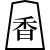
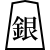
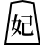
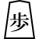
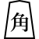
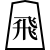
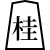

妖怪将棋变种
王棋，亦称为駒妖棋，是一种在8x8棋盘上进行的、具有浪漫特色的传统日本将棋变体。 这个版本引入了王妃棋子，它结合了国际象棋中的骑士和主教的移动方式，鼓励更大胆、更具动态性的游戏风格，通常使得游戏时间更短。
虽然王棋保留了将棋的核心原则，但它被当代神话而非历史渊源所包围，使其与像查图兰加这样有着良好文献记录的游戏区别开来。 在其文化叙事的核心是一个与名为駒妖的神秘妖怪相关联的都市传说，为王棋增添了神秘的魅力，并将其置于丰富的日本民俗传说之中。 不管这个故事是建立在事实还是虚构之上，它都为游戏的背景增添了深度，将玩家吸引到一个战略游戏与神话故事交织的世界里。
開局配置
|  |  |
 |  | |
|||
 |
 |
||||||
|  | |||||||
 |
|
|
|
|
|
|
|
|  |  | ||||||
 |
 |  |
|
|
棋子
北方玩家
| 名稱 | 簡稱 |
|---|---|
| 角行 | 角 |
| 王將 | 王 |
| 桂馬 | 桂 |
| 香車 | 香 |
| 步兵 | 歩 |
| 王妃 | 妃 |
| 龍馬 | 馬 |
| 成桂 | 圭 |
| 成香 | 杏 |
| 成步 | と |
| 女神 | 神 |
| 龍王 | 龍 |
| 成銀 | 全 |
| 飛車 | 飛 |
| 銀將 | 銀 |
南方玩家
| 名稱 | 簡稱 |
|---|---|
| 角行 | 角 |
| 玉將 | 玉 |
| 桂馬 | 桂 |
| 香車 | 香 |
| 步兵 | 歩 |
| 玉妃 | 妃 |
| 龍馬 | 馬 |
| 成桂 | 圭 |
| 成香 | 杏 |
| 成步 | と |
| 女神 | 神 |
| 龍王 | 龍 |
| 成銀 | 全 |
| 飛車 | 飛 |
| 銀將 | 銀 |
注： 与传统将棋相比的主要区别是引入了一个称为王妃的独特棋子。 这个在经典将棋中不存在的棋子代表了游戏的一个关键战略要素。 它融合了国际象棋骑士和主教的移动能力，使其能够以L形跳过其他棋子，以及沿任意数量的未占据的方格斜向移动。 这种移动组合赋予了王妃在8x8棋盘上无与伦比的多功能性，使其成为王棋中的一个中心且强大的棋子。
规则
与传统将棋的主要区别：
- 棋盘大小：王棋在8x8的棋盘上进行，不同于将棋使用的标准9x9棋盘。
- 王妃棋子：王棋中的独特增加是王妃棋子，它结合了国际象棋中的主教和骑士的移动方式，使其成为一个强大而多用途的棋子。
- 强制升级：
- 在王棋中，棋子升级是强制的。这条规则适用于所有棋子，包括王妃。
- 升级后，王妃获得国王的移动能力，加上其现有的能力。
- 使用王棋兵进行将军：王棋允许通过放置王棋兵来实现将军，这是传统将棋中没有的独特功能。
注： 王棋中的所有其他规则和游戏机制都继承自传统将棋。 这包括棋子的一般移动方式、捕获方法以及游戏的基本目标。 通过保留这些将棋的基本方面并融合独特元素，王棋为玩家提供了既熟悉又新颖的战略体验。